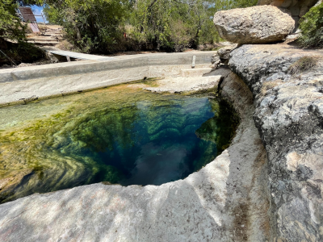
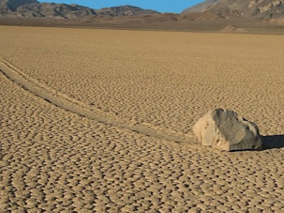
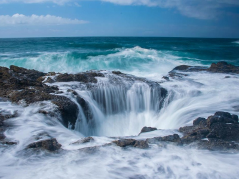
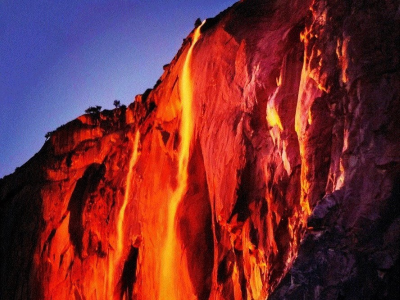

Sites of Grandeur & Mystery
They say that no place is like home. This is true, because no place is like anywhere else. Every square inch of the earth is unique. That said, there are certainly some places that are a bit more noticeably unique than others.
United States of America

Jacob's Well

Sailing Stones

Thor's Well

Yosemite Firefall